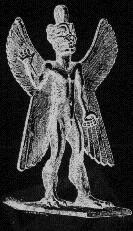
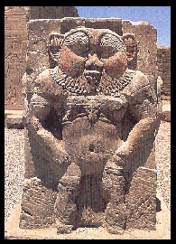

Many of us have seen and even interacted with lesser Demons. These are the Demons with the glowing red eyes, rubbery wings and some even have fur. Up close, many of these Demons have the most beautiful eyes, like glowing rubies, deep and rich in color. They are extraterrestrial beings, originally from different planets, but many live with Satan and the Nordic Gods. Some of the small "Messenger Demons" are souls created by our Gods.
|  Pazuzu | The lesser Demons are protectors, such as the Sumerian Demon, Pazuzu who is a protector of children and also women in childbirth. Pazuzu got a bad rap in the 1973 movie "The Exorcist" written by Catholic "William Peter Blatty." This was the Christian retaliation against the 1968 movie "Rosemary's Baby" which depicted Satan in a somewhat positive perspective. "The Exorcist," frightened many away from Satan and pushed the belief in Demonic "possession." AGAIN, fear is used as a powerful tool to keep people spiritually enslaved and ignorant. Unlike the Christian "God" and his ilk, Satan and his Demons do not use coercion, nor do they push themselves upon anyone. |
Satan respects free will and people come to him willingly, not through fear or the use of force. Several of us have invoked Demons and let them speak through us; no harm has ever come to anyone. Angelic beings on the other hand are notorious for this sort of thing [possession and coercion] and of course, like everything else, it is blamed on Satan. Just as hard core Christians cannot stop from harassing unbelievers, even to the point of murder, to try to get them to accept "Jesus," angels and related spirits are no different.
|  Bes | Bes is another example of a lesser Demon. Demons of this race are the ones with the beautiful ruby like eyes. These Demons are protectors, patrons of music, dancing, healing and are guardians. In Ancient Egypt, dwarves [these lesser Demons] were revered and highly respected. These Demons are short, they are only two to three feet in height. |

Back to Demons, the Gods of Hell
© Copyright 2003, 2005, 2015, Joy of Satan Ministries;
Library of Congress Number: 12-16457